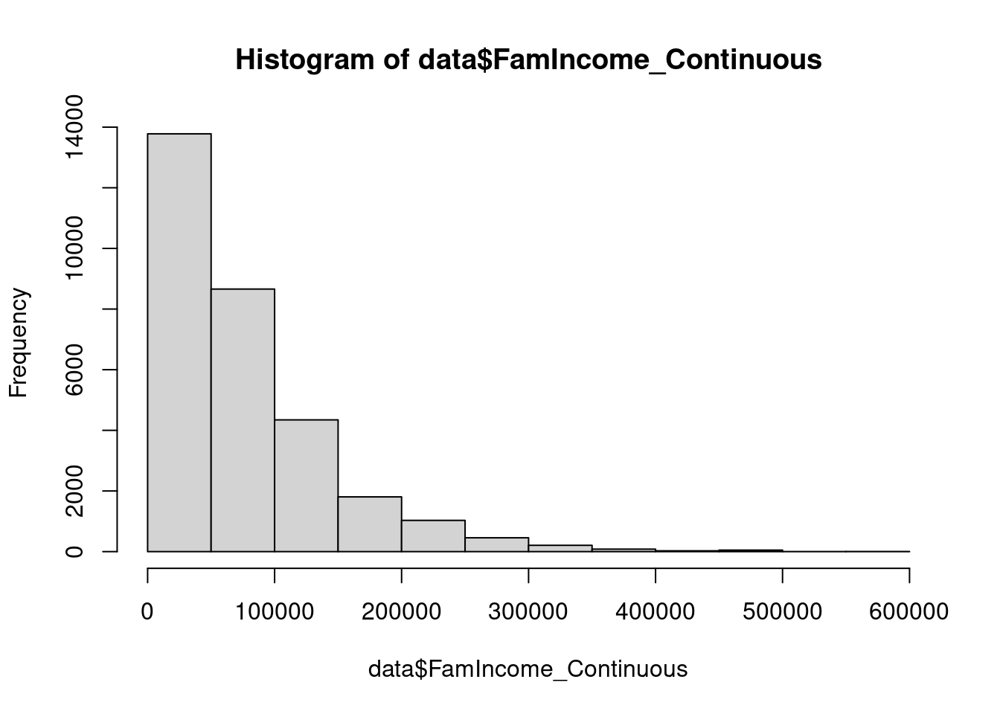
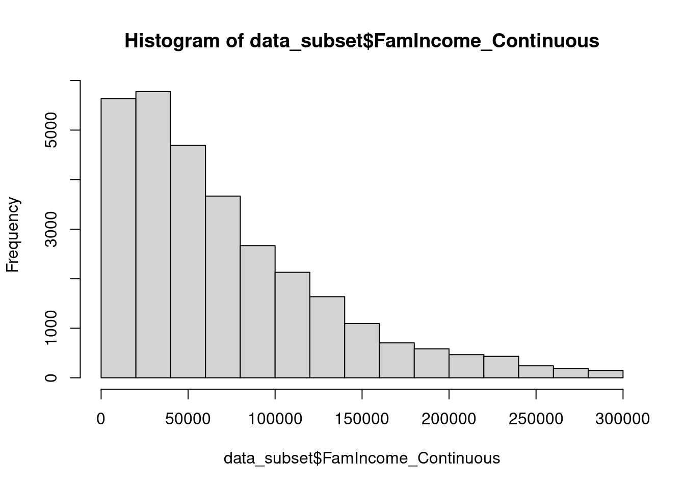

We will use the MEPS dataset for the purposes of this tutorial.
data = read.csv("Datasets/mepsData.csv")Use NHANES project for inspiration
We can use rbind and cbind to add new rows
and columns respectively. They must have the same structure in order to
work.
sample_row = data[1337, ] # Picking a random row for the example
data_subset = rbind(data, sample_row)
nrow(data)> [1] 30461nrow(data_subset)> [1] 30462An easier way to make new columns when working with data.frames is by
using the $.
data2 = data # Keep our original dataset untouched.
data2$newColumn = 1 # Fill the column entirely with 1's
summary(data2$newColumn)> Min. 1st Qu. Median Mean 3rd Qu. Max.
> 1 1 1 1 1 1Often you will find that you require only portions of a dataset.
The most basic method is to directly pass the row or column number or name.
data_subset = data[ , c("Person_ID", "Age", "Sex")] # Keep these columns
summary(data_subset)> Person_ID Age Sex
> Min. :2.290e+09 Min. : 0.00 Min. :0.0000
> 1st Qu.:2.295e+09 1st Qu.:18.00 1st Qu.:0.0000
> Median :2.320e+09 Median :38.00 Median :0.0000
> Mean :2.310e+09 Mean :39.07 Mean :0.4791
> 3rd Qu.:2.325e+09 3rd Qu.:59.00 3rd Qu.:1.0000
> Max. :2.330e+09 Max. :85.00 Max. :1.0000
> NA's :375data_subset = data[1:10000, ] # Keeping the first 10000 rows
summary(data_subset)> Observation Person_ID FluVaccination Age
> Min. : 1 Min. :2.290e+09 Min. :0.000 Min. : 0.00
> 1st Qu.: 2501 1st Qu.:2.292e+09 1st Qu.:0.000 1st Qu.:17.00
> Median : 5000 Median :2.293e+09 Median :0.000 Median :38.00
> Mean : 5000 Mean :2.293e+09 Mean :0.415 Mean :38.54
> 3rd Qu.: 7500 3rd Qu.:2.295e+09 3rd Qu.:1.000 3rd Qu.:58.00
> Max. :10000 Max. :2.297e+09 Max. :1.000 Max. :85.00
> NA's :3749 NA's :98
> Sex RaceEthnicity HealthInsurance NotAffordHealthCare
> Min. :0.0000 Min. :1.000 Min. :1.000 Min. :0.00000
> 1st Qu.:0.0000 1st Qu.:1.000 1st Qu.:1.000 1st Qu.:0.00000
> Median :0.0000 Median :2.000 Median :1.000 Median :0.00000
> Mean :0.4797 Mean :2.103 Mean :1.495 Mean :0.04794
> 3rd Qu.:1.0000 3rd Qu.:2.000 3rd Qu.:2.000 3rd Qu.:0.00000
> Max. :1.0000 Max. :5.000 Max. :3.000 Max. :1.00000
> NA's :176
> FamIncome_Continuous MentalHealth FamIncome_Categorical
> Min. : 0 Min. :1.000 Min. :1.000
> 1st Qu.: 26000 1st Qu.:1.000 1st Qu.:3.000
> Median : 54906 Median :2.000 Median :4.000
> Mean : 73092 Mean :2.067 Mean :3.507
> 3rd Qu.:100000 3rd Qu.:3.000 3rd Qu.:5.000
> Max. :507855 Max. :5.000 Max. :5.000
> NA's :4 NA's :167
> FamIncome_PercentPoverty HealthStatus HaveProvider CensusRegion
> Min. : 0.0 Min. :1.000 Min. :0.0000 Min. :1.00
> 1st Qu.: 131.6 1st Qu.:1.000 1st Qu.:1.0000 1st Qu.:2.00
> Median : 262.0 Median :2.000 Median :1.0000 Median :3.00
> Mean : 351.9 Mean :2.227 Mean :0.7753 Mean :2.72
> 3rd Qu.: 478.7 3rd Qu.:3.000 3rd Qu.:1.0000 3rd Qu.:3.00
> Max. :3020.2 Max. :5.000 Max. :1.0000 Max. :4.00
> NA's :4 NA's :164 NA's :439 NA's :98
> TotalHealthExpenditure HasHypertension HasDiabetes BMI
> Min. : 0 Min. :0.0000 Min. :0.0000 Min. : 0.10
> 1st Qu.: 186 1st Qu.:0.0000 1st Qu.:0.0000 1st Qu.:23.60
> Median : 1062 Median :0.0000 Median :0.0000 Median :27.40
> Mean : 6120 Mean :0.3501 Mean :0.0959 Mean :28.22
> 3rd Qu.: 4674 3rd Qu.:1.0000 3rd Qu.:0.0000 3rd Qu.:32.10
> Max. :807611 Max. :1.0000 Max. :1.0000 Max. :71.10
> NA's :2674 NA's :94 NA's :4072We will want to do more complex slices as our data may contain outliers, or you are investigating specific individuals.
Let’s take a look at some useful functions.
hist(data$FamIncome_Continuous)
As you can see, the majority of data points lie below $300,000. Let’s
take a clearer look at those individuals by taking advantage of the
subset function.
data_subset = subset(data, FamIncome_Continuous<300000)
hist(data_subset$FamIncome_Continuous)
The dataset now only contains individuals below our target income. We can investigate the impact this has on the entire dataset below.
summary(data$FamIncome_Continuous)
> Min. 1st Qu. Median Mean 3rd Qu. Max. NA's
> 0 26895 56532 75267 103882 583219 14
summary(data_subset$FamIncome_Continuous)
> Min. 1st Qu. Median Mean 3rd Qu. Max.
> 0 26370 55538 71651 100916 299406The
subsetfunction can be used on vectors, matrices and data frames!
For even more complex slices of data, the which function
comes in handy. It works a little differently…the which
function provides indices where our logic is true, so we have to pass
the which function as an input for the rows to keep.
Let’s investigate individuals with Normal BMI classification (18.5-25) who have diabetes.
# Will provide a vector telling us which indices are TRUE
index = which(data$HasDiabetes==1 & #Combine statements with &
data$BMI>18.5 &
data$BMI<25)
head(index) #See the first six elements of index> [1] 300 444 446 511 605 681data_subset = data[index, ] # We leave the column input blank to include all columnssummary(data_subset$HasDiabetes)
> Min. 1st Qu. Median Mean 3rd Qu. Max.
> 1 1 1 1 1 1
summary(data_subset$BMI)
> Min. 1st Qu. Median Mean 3rd Qu. Max.
> 18.60 21.60 23.10 22.76 24.20 24.90We may be investigating the impact of hypertension. As you can see
below, the HasHypertension column has some missing
entries.
summary(data$HasHypertension)> Min. 1st Qu. Median Mean 3rd Qu. Max. NA's
> 0.000 0.000 0.000 0.348 1.000 1.000 7725The is.na function tests whether a variable contains
NA.
is.na(1)
> [1] FALSE
is.na(NA)
> [1] TRUE
is.na(c(1,2,3,NA))
> [1] FALSE FALSE FALSE TRUEWe can use the is.na function combined with either of
our methods above.
data_subset = subset(data, is.na(HasHypertension)==0)
# or
index = which(is.na(data$HasHypertension)==0)
data_subset = data[index, ]The data now contains only rows where hypertension is not missing.
summary(data$HasHypertension)> Min. 1st Qu. Median Mean 3rd Qu. Max. NA's
> 0.000 0.000 0.000 0.348 1.000 1.000 7725summary(data_subset$HasHypertension) > Min. 1st Qu. Median Mean 3rd Qu. Max.
> 0.0000 0.0000 0.0000 0.3483 1.0000 1.0000Mean, median, mode
common category
If we try to use rbind to combine datasets we may get
some unwanted behaviour.
data_subset_diab = subset(data, HasDiabetes==1)
data_subset_hyper = subset(data, HasHypertension==1)
data_subset = rbind(data_subset_diab, data_subset_hyper) # Use rbind to directly combine the tables by row
nrow(unique(data_subset)) # Number of unique observations
> [1] 8633
nrow(data_subset) # Total Observations
> [1] 10805As you can see, there are more total observations than unique
observations. We are double counting some observations as there are
people with both diabetes and hypertension. This is where the
merge function comes in handy.
data_subset = merge(data_subset_diab, data_subset_hyper, by = "Person_ID", all = TRUE, sort = TRUE)
nrow(data_subset)> [1] 8633The all parameter tells the function to keep any
observation that does not have a matching ID, achieving the behaviour we
desire.
Remember to check out the help page for any function (using
help(merge)), they have even more useful information!